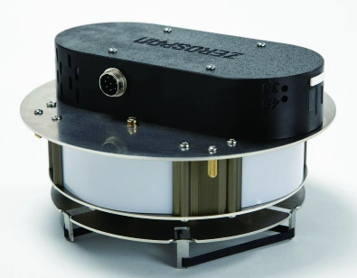
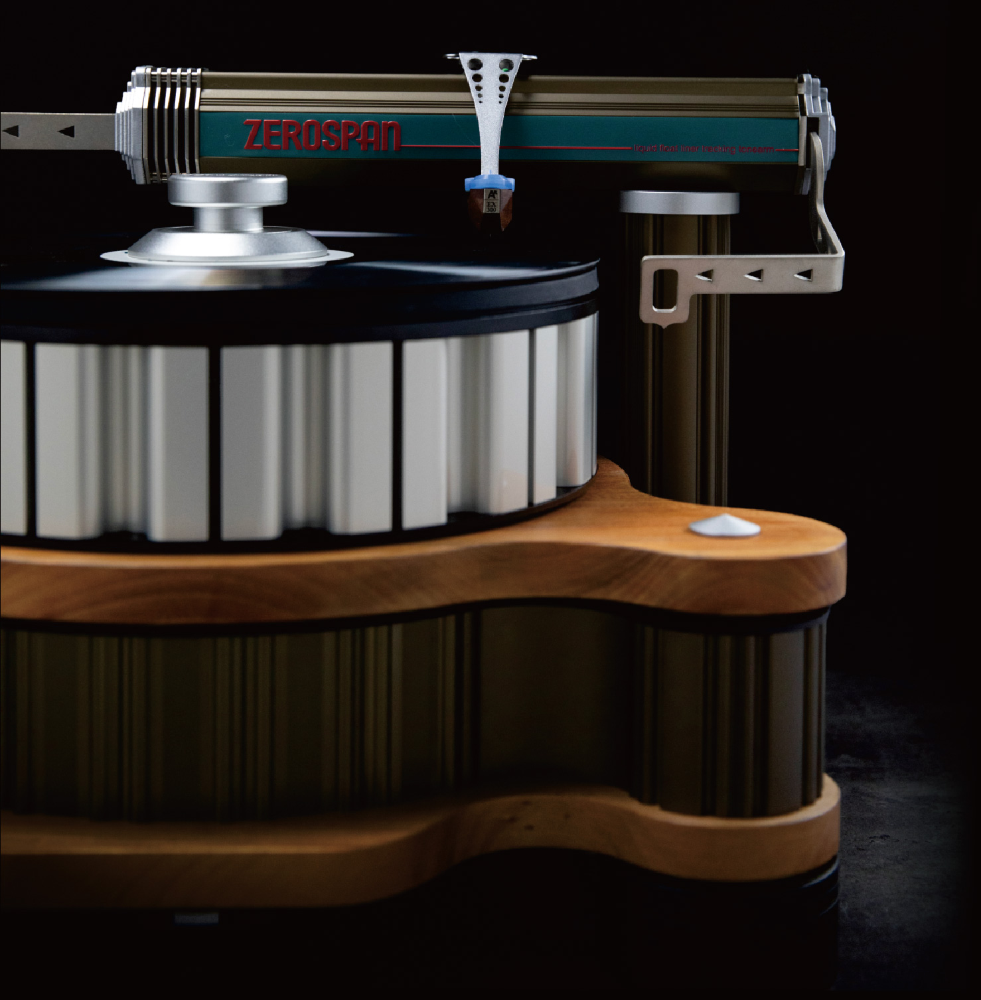
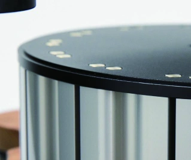
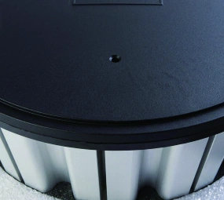
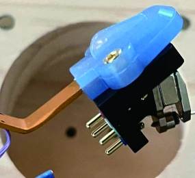
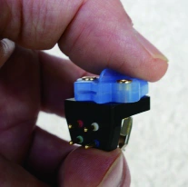
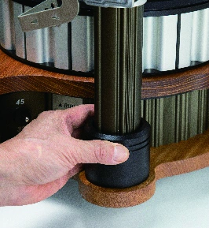
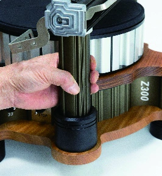

柔性直驅傳動
大多數唱盤都以皮帶傳動，雖然可隔離馬達振動，但皮帶也會有抖動發生，且因由側向拉力，造成不平衡。另有馬達直驅傳動：馬達與轉盤軸心直接連結，振動也直接傳到，又馬達級數有限，轉速無法達到極線性的狀態，故兩者皆有缺點。
世界首創柔性直驅，則介於兩者之間，取其優點，摒棄缺點，直驅而不連軸，使振動不會傳遞，又沒有皮帶抖動的問題，且由中心傳動，不會造成不平衡問題。

最古老也最先進
金屬材質的本體，融入兩片台灣國寶實木，優質紋理增添溫潤感覺。為呈現藝術造型，開關全設於兩側，而且操作非常就手。
唱頭藉著液浮，乘小舟劃過音軌，音樂渲染自然湧出。
柔軟的手才能拉出好琴音，液浮正切唱臂是當今世界最軟的。
被束縛百多年的唱頭，突然，液浮正切唱臂將它放鬆，感激不盡以最美音色回報你。
用過這液浮正切唱臂，才知道自己收藏的黑膠唱片有這麼深的底蘊。
上世紀最偉大的發明是黑膠唱片，本世紀液浮正切唱臂將它發揮到極致。
聽過這液浮黑膠音色，我不想再接受其他訊源的音樂。
我生命，如同黑膠唱片緩緩轉動，如同音軌綿延悠長。
早餐時，聆聽一張黑膠唱片，音符是我一天不可缺少的養分。
我熱愛生活中的每一項目，每天只分配一點時間聽音響。
我選擇音色最棒的黑膠唱片。
即使音響沒有開機，樂音仍然在我腦海中，流轉⋯⋯
ZEROSPAN
黑膠音色革命性大提升
百年來最大一步
利用靜態液浮，無外加動力，唱頭即可順應音軌位移，始終維持正切角度。唱臂本身不會自生震動，液體又能隔絕外來的任何震動，使唱頭最純淨的發聲。
唱頭可以萬向的運動，沒有任何束縛，完全避免唱針承受不必要的外來應力。好聲音是這樣產生，百年來沒有任何唱臂可以達到的。
固態結構，耐久不變易，更好調校，更好操作維護。榮獲世界多國發明專利。

大多數唱盤都以皮帶傳動，雖然可隔離馬達振動，但皮帶也會有抖動發生，且因由側向拉力，造成不平衡。另有馬達直驅傳動：馬達與轉盤軸心直接連結，振動也直接傳到，又馬達級數有限，轉速無法達到極線性的狀態，故兩者皆有缺點。
世界首創柔性直驅，則介於兩者之間，取其優點，摒棄缺點，直驅而不連軸，使振動不會傳遞，又沒有皮帶抖動的問題，且由中心傳動，不會造成不平衡問題。
獨立的馬達傳動總成，包含：馬達本體、速度控制回路，及所有的傳動組件，設計成一個馬達模組，可徒手快速拆卸，易於保養或維修更換。馬達模組的輸出軸及轉盤軸各設有柔性離合器，藉此傳動，而把振動隔離。

鋁擠型開模成型鋁塊，搭配 CNC 切削圓板材，再用青銅柱緊配結合，成為一個具有動感造型，看起來具有療癒效果的轉盤，而且可有效消除鐘響效應的共振。

特別開模成型的矽膠唱片墊，配合 CNC 切削的轉盤，使其外延可微幅上升。當放上唱片時，唱片外延可伏貼於墊上，加上中央鎖緊式唱片鎮鎖定，使唱片緊密結合於厚實的唱片墊上，此效果媲美於吸盤式轉盤。


唱頭與唱頭架一般皆用螺絲鎖定，如此皆是硬結構連結，易產生諧振，而影響音質。又當要移動唱頭前後位移時，必須拆鬆及鎖緊動作。本設計具有消除諧振，大幅提升音質功效，又可快速移動唱頭前後位置，且永不鬆脫。


先調下面的鎖定環，再調唱臂柱，左右一起調整，可校正唱臂水平，在唱片播放中亦可調整。
本設計具有非常容易安裝調整的特色。唱盤分成上下兩層。
特別說明：若隨貨有附唱頭時，原廠會依此唱頭調整好應該調整的參數，包含：VTA 高度、正切線位置、針壓重量、唱臂左右水平。（以上可用所附輔具，按照說明書個別調整。）
擁有多項專利，仿冒必究
Z300 唱盤音色表現
節錄於《音響論壇》458 期，116–118 頁
劉漢盛 總編評論
「音場表現更正確、細節呈現更多、解析力更高、聲音更活生。」
劉漢盛，《音響論壇》458 期
「純就聲音表現而言，這套 Zerospan 水浮正切唱臂系統真的讓我大開了耳界。」
劉漢盛，《音響論壇》458 期
關於 ZEROSPAN
很多儀器都有 ZERO 歸零及 SPAN 跨距的調整。創辦人是學電機工程，常常須校正設備的 ZERO 及 SPAN 值，因而將兩個字組合成「ZEROSPAN」，就是零跨距，沒有距離，融和一體，緊密相依。
人與人，人與萬物都應該 ZEROSPAN。
大多數人，生活中都在追求 SPAN 值越大越好。保有 ZERO 歸零的初心，會更珍惜努力得來的 SPAN 成果。
同步恭候鑑賞
—
星期四至星期日
ZEROSPAN 展出：Z300 唱盤・液浮正切唱臂
黑膠唱盤｜液浮正切唱臂
SCR 電熱調整器｜馬達緩衝啟動器